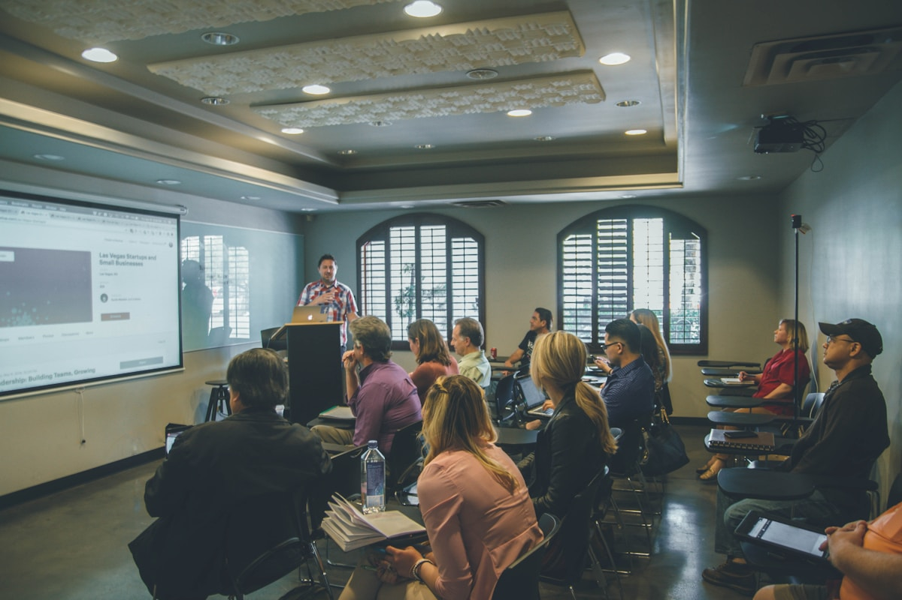

01
Teologia Sistemática
Estudo organizado das doutrinas cristãs: Deus, Cristo, Espírito Santo, salvação, igreja e escatologia.
Formação teológica sólida, fundamentada nas Escrituras, para quem deseja aprofundar o conhecimento bíblico e servir com excelência.
Quem somos
O SETAD é um seminário teológico dedicado à formação de líderes e servos cristãos. Nossa missão é equipar homens e mulheres com conhecimento bíblico profundo, pensamento teológico claro e caráter moldado pelo Evangelho.
Com metodologia acadêmica e comunhão fraterna, preparamos nossos alunos para o ministério pastoral, ensino, missões e serviço na igreja local.
Onde estudar
O SETAD está presente em diversas regiões de Belém para levar formação teológica de qualidade mais perto de você.
Aulas aos sábados em igrejas parceiras espalhadas pela cidade — do Utinga à Marambaia. Encontre endereços, mapas e informações de cada unidade.
O que você vai aprender
Um currículo estruturado que abrange as principais áreas da teologia cristã.
01
Estudo organizado das doutrinas cristãs: Deus, Cristo, Espírito Santo, salvação, igreja e escatologia.
02
Princípios de interpretação das Escrituras para uma leitura fiel e contextualizada do texto bíblico.
03
Trajetória do cristianismo desde os apóstolos até os dias atuais, compreendendo reformas e movimentos teológicos.
04
Pregação, aconselhamento pastoral, liderança e ética cristã aplicadas ao contexto ministerial contemporâneo.
Área restrita
Alunos e professores acessam notas, trabalhos e a biblioteca teológica digital do seminário por meio de login individual.
Consulte suas notas de provas, acompanhe prazos de trabalhos e acesse a biblioteca digital com livros teológicos e Bíblias de estudo.

Gerencie turmas, lance notas, acompanhe trabalhos dos alunos e acesse o acervo teológico para consulta e referência.
Onde estamos
Visite o SETAD ou trace a rota até o seminário pelo Google Maps — funciona no computador e no celular.
SETAD — Seminário Teológico da Assembleia de Deus em Belém · Belém, PA
Detalhes
Atualmente, oferecemos três modalidades de formação em Teologia:
Matrícula
Inscreva-se online e escolha o módulo adequado ao seu momento de formação teológica — Básico, Médio ou Avançado.
Matricule-se agora